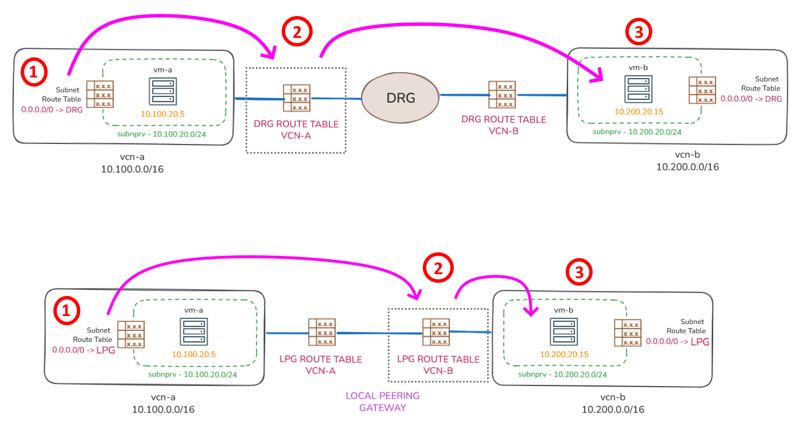
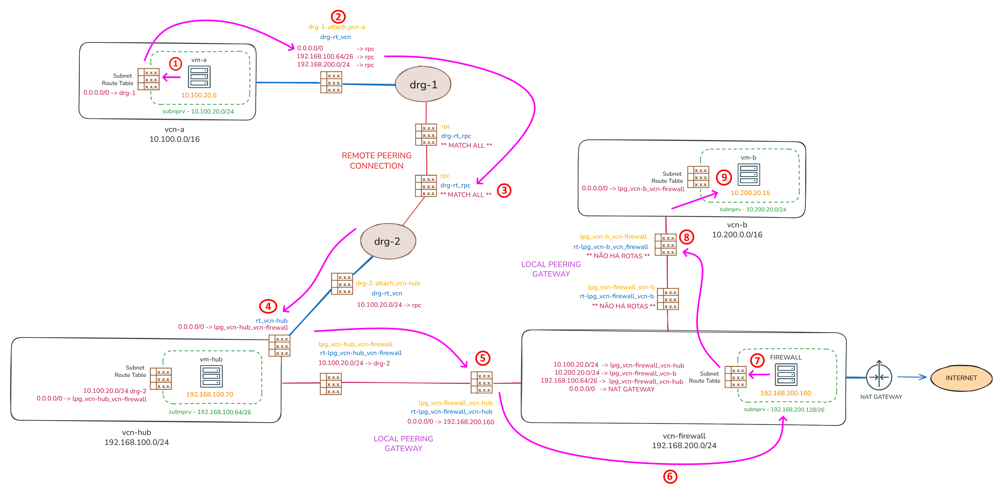

Local Peering Gateway (LPG)
O Local Peering Gateway (LPG) é utilizado para conectar duas VCNs diretamente.
Hoje, já não é mais recomendado utilizar LPGs para conectar VCNs pois, a função que o LPG desempenha foi substituída pelo DRG, que é o modo atualmente recomendado para se construír topologias de redes no OCI.
Eu particularmente, ainda vejo diversas topologias que utilizam LPGs para interconectar VCNs. Por esse motivo, considero importante compreender como o roteamento funciona quando existe um LPG realizando a comunicação entre as VCNs.
DRG vs LPG
Além da forma utilizada para estabelecer a conectividade, as decisões de roteamento realizadas através do DRG diferem das utilizadas em cenários com LPG. Observe o diagrama abaixo:

No caso do DRG, a decisão de roteamento ocorre quando o pacote sai da VCN e entra no DRG. Nesse momento, é consultada a tabela de rotas associada ao anexo responsável pela conexão entre a VCN e o DRG.
Já no cenário com LPG, existem duas tabelas de rotas, uma em cada extremidade da conexão, que podem ou não existir. Nesse modelo, a decisão de roteamento ocorre quando o pacote sai da VCN de origem e entra na VCN de destino.
Sim, com o LPG é possível definir uma tabela de rotas para cada extremidade da conexão. No exemplo, existe uma tabela de rotas aplicada para os pacotes que entram na vcn-a e outra para os pacotes que entram na vcn-b.
Mas vale lembrar que essas tabelas de rotas associadas ao LPG só fazem sentido quando há a necessidade de desviar ou direcionar o tráfego para destinos específicos após a entrada do pacote na VCN de destino. Caso contrário, não é necessário associar nenhuma tabela, pois o próprio LPG já realiza automaticamente a divulgação das redes das VCNs conectadas.
Fluxo de Roteamento
Observe o diagrama abaixo, que ilustra o fluxo de roteamento entre os recursos de rede da topologia de exemplo:

Suponha que a compute instance vm-a (10.100.20.5) precise se comunicar com a compute instance vm-b (192.168.200.160). As decisões de roteamento da origem para o destino, que fazem o tráfego passar pelo compute instance firewall (192.168.200.160), são:
-
A primeira decisão de roteamento ocorre no próprio host
10.100.20.5. Nessa etapa o host determina o endereço IP e a interface de rede que será usada para enviar o tráfego. Normalmente existe uma rota default apontando para o gateway da sub‑rede (10.100.20.1). -
Após o gateway da sub-rede (
10.100.20.1) decidir que o pacote deve ser encaminhado ao DRG, a segunda decisão de roteamento ocorre quando o pacote entra nodrg-1. Nesse momento, o DRG consulta a tabela de rotasdrg-rt_vcn. Essa tabela possui um Import Route Distribution que instala todas as rotas divulgadas pelo Remote Peering Connection. -
A terceira decisão de roteamento ocorre quando o pacote está prestes a entrar no
drg-2, onde a tabeladrg-rt_rpcé consultada. Essa tabela possui um Import Route Distribution que instala todas as rotas de todas as redes conectadas aodrg-2(MATCH ALL). -
A quarta decisão de roteamento ocorre quando o pacote entra na
vcn-hub, onde a tabela de rotasrt_vcn-hubpassa a ser consultada. Nessa tabela existe uma rota default (0.0.0.0/0) que direciona todo o tráfego para o LPGlpg_vcn-hub_vcn-firewall, no qual conecta as VCNsvcn-hubàvcn-firewall. Entretanto, essa rota default não possui efeito para comunicações destinadas à própriavcn-hub(192.168.100.0/24). Isso significa que, caso o destino davm-aforvm-hub, não é necessário que a tabelart_vcn-hubcontenha uma rota explícita para a rede192.168.100.0/24(há um roteamento implícito neste caso). -
A quinta decisão de roteamento ocorre quando o pacote entra na
vcn-firewallatravés do Local Peering Gateway. Nesse momento, a tabela de rotasrt-lpg_vcn-firewall_vcn-hubé consultada onde existe uma rota default (0.0.0.0/0) que direciona todo o tráfego para o endereço IP dofirewall(192.168.200.160). -
A compute instance
firewallrealiza a inspeção do tráfego e, caso a comunicação seja permitida, encaminha o pacote para o gateway da sua sub-rede (192.168.200.129). A tabela de rotas do hostfirewallé simples, contendo apenas uma rota default apontando para o respectivo gateway da sub-rede. -
A sétima decisão de roteamento ocorre no gateway da sub-rede
192.168.200.129. Nesse momento, a tabela de rotas associada à sub-rede é consultada. Essa tabela deve conter rotas específicas para as redes internas do OCI, pois existe uma rota default que direciona o tráfego para o NAT Gateway (tráfego destinado à Internet). Isso significa que todas as redes do OCI para as quais ofirewallprecise acessar devem estar explicitamente definidas nessa tabela caso contrário, o tráfego será encaminhado ao NAT Gateway. -
A oitava decisão de roteamento ocorre quando o tráfego está prestes a entrar na
vcn-batravés do Local Peering Gateway, onde a tabela de rotasrt-lpg_vcn-b_vcn-firewallé consultada. Essa tabela não possui nenhuma rota definida e, neste caso, o próprio Local Peering Gateway realiza automaticamente a divulgação das redes das VCNs conectadas, não sendo necessário definir qualquer regra de roteamento. -
Por fim, o pacote entra na compute instance
vm-bonde é processado pela aplicação de destino. Após o processamento, o tráfego de resposta é encaminhado ao gateway da sua respectiva sub-rede (10.200.20.1) para iniciar o caminho de retorno até a origem.
O tráfego de retorno, ou seja, a resposta da compute instance vm-b (10.200.20.15) para vm-a (10.100.20.5), segue o mesmo fluxo de decisões de roteamento descrito anteriormente, em sentido inverso.
Comandos de Exemplo
No diretório scripts/hub-spoke-com-local-peering-gateway/ há um conjunto de scripts para criar a topologia apresentada através do OCI CLI.
$ ls -1F
create/
data.env
destroy/
O arquivo data.env define variáveis globais usadas pelos scripts. Elas specificam nomes dos recursos, endereços IP, regras de roteamento, IDs das imagens Linux, tipo de shape e quantidades de OCPU e memória para as compute instances.
Antes de executar os scripts, crie e exporte as seguintes variáveis de ambiente:
-
COMPARTMENT_ID
- ID do compartment onde os recursos serão criados no seu tenancy.
-
SSH_PUB_KEY_PATH
- Caminho para a chave pública SSH que será usada pelas três compute instances (
vm-a,vm-befirewall).
- Caminho para a chave pública SSH que será usada pelas três compute instances (
$ export COMPARTMENT_ID="ocid1.compartment.oc1..aaaaaaaa"
$ export SSH_PUB_KEY_PATH="/caminho/chave-publica-ssh.key"
Para criar os recursos, execute o script create.sh a partir do diretório create/:
$ cd create/
$ ./create.sh
Para excluir os recursos, execute o script destroy.sh a partir do diretório destroy/:
$ cd destroy/
$ ./destroy.sh
ArmFirewall
O processo de criação da compute instance firewall (192.168.200.160) já realiza automaticamente a instalação do ArmFirewall, uma aplicação web desenvolvida para gerenciar funcionalidades de roteamento e firewall em ambientes Linux.
$ cat create/cloud-init/cloud-init/firewall.sh
#!/bin/bash
/usr/bin/dnf install -y git jq
# Retorna a interface primária
mac="$(curl -s -H 'Authorization: Bearer Oracle' http://169.254.169.254/opc/v2/vnics/ | jq -r '.[0].macAddr' | tr '[:upper:]' '[:lower:]')"
primary_iface="$([ -n "$mac" ] && ip -o link show | awk -v mac="$mac" 'tolower($0) ~ mac {gsub(":", "", $2); print $2; exit}')"
# ArmFirewall deployment
cd /opt && git clone https://github.com/daniel-armbrust/armfirewall-proj.git && cd armfirewall-proj/bin
./install.sh --lan-iface $primary_iface --wan-iface $primary_iface --router-mode
exit 0
Após a instalação, a console web pode ser acessada através do endereço https://192.168.200.160:8000 utilizando o usuário admin e a senha inicial admin.
Vale lembrar que todas as sub-redes desta topologia de exemplo são privadas, o que impede o acesso direto a partir da Internet à console web do ArmFirewall. Neste caso, o acesso pode ser realizado utilizando o recurso OCI Bastion.